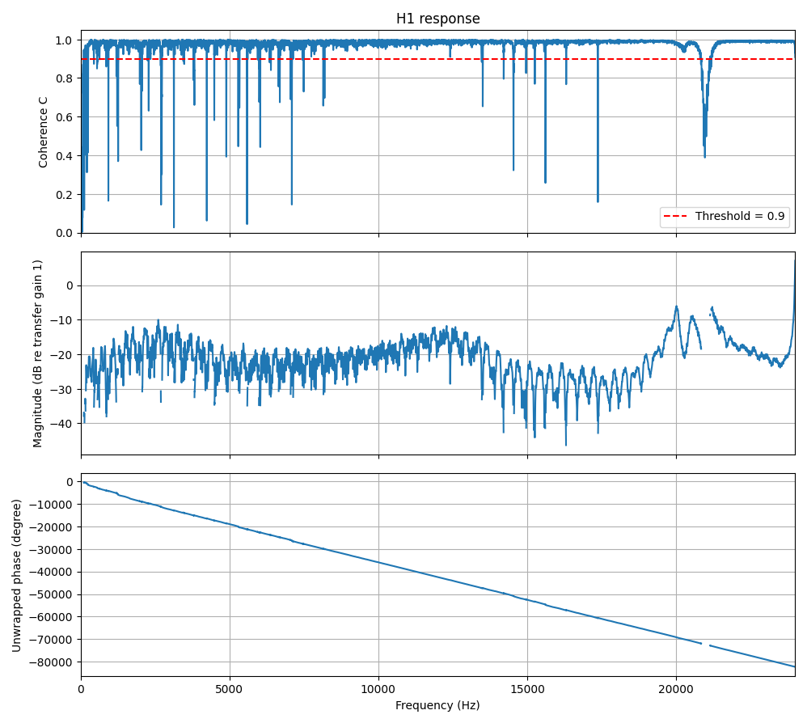

pyacdete.loudspeaker.h1_response#
h1_response(x, y, fs, *, mode="both", threshold=0.9,
nperseg=None, save_path="response.csv")
Estimate the frequency response function (FRF) with the H1 estimator using Welch spectral estimates. Select magnitude response (FR), phase response (PR), or both; plot coherence and export the selected responses to CSV.
* makes the following arguments keyword-only. For example, write mode="both" when calling the function.
Parameters#
xarray_like, shape (N,)Real, one-dimensional samples of the input reference. This can be a recorded electrical loopback associated with the loudspeaker drive. In the SMARD example, it is
wgn_48kHz_ch8_DirLS.flac.The API receives numerical samples. They are not automatically calibrated into volts.
yarray_like, shape (N,)Real, one-dimensional samples of the corresponding microphone recording. Acoustic pressure is converted by the microphone, preamplifier and ADC into these digital samples. In the example, use
wgn_48kHz_ch24_single_mic.flac.xandymust be synchronized, have the same sampling rate and have equal lengths. They need not represent the same physical quantity. The FRF has output units per input unit; calibrated pressure and voltage would give Pa/V, while this example uses a digital transfer ratio.fsfloatPositive sampling frequency in Hz. SMARD uses 48000 Hz. Duration is calculated from
len(x) / fs; recorded signals do not require a random seed.mode{'both', 'magnitude', 'phase'}, optionalResponse to display, return and save. The default is
"both". The full coherence curve is plotted in every mode."magnitude": magnitude response in dB."phase": unwrapped phase response in degrees."both": magnitude and phase responses.
thresholdfloat, optionalMinimum magnitude-squared coherence for accepting a response value. The default is
0.9, and the supported range is0 <= threshold <= 1. Increasing it makes the selection stricter. It does not change the calculation of coherence.npersegint or None, optionalNumber of samples per Welch segment, as in scipy.signal.welch. A supplied integer overrides the automatic choice.
With
None, this API selects a power-of-two length targeting at most 0.5 seconds and retaining at least eight complete, half-overlapped segments. This is a starting rule, rather than an optimum inferred from the acoustic system. It differs from SciPy's own default segment selection.All spectra use the same Hann window, 50% overlap, constant detrending and mean averaging. The FFT length equals
nperseg. The resolved length is returned in the result.save_pathstr, pathlib.Path or None, optionalCSV file location. The default is
"response.csv"in the working directory. Set it toNoneto skip file output. The parent directory must exist; an existing file at the same path is overwritten.CSV columns begin with
frequency_hz,coherence, followed bymagnitude_db,phase_deg, or both, according tomode. Rejected response values are blank cells.
Returns#
result : dict
The following fields are returned. Frequency-dependent arrays have the same length, nperseg // 2 + 1.
| Key | Type | Description |
|---|---|---|
frequency_hz |
ndarray, shape (K,) | One-sided frequency axis in Hz, from DC up to Nyquist for an even FFT length. |
coherence |
ndarray, shape (K,) | Magnitude-squared coherence C at every frequency; undefined values are NaN. |
valid |
ndarray of bool, shape (K,) | Acceptance mask: coherence >= threshold. |
nperseg |
int | Actual Welch segment length used. |
magnitude_db |
ndarray, shape (K,) | Magnitude response in dB relative to transfer magnitude 1. Present for "magnitude" and "both". |
phase_deg |
ndarray, shape (K,) | Unwrapped phase in degrees. Present for "phase" and "both". |
The requested response arrays contain NaN at rejected frequencies. Plotting leaves gaps there, and CSV export uses blank cells. Coherence remains available for inspection. Close the plot window to return to the calling program.
Notes#
Theoretical foundations of H1#
Let the reference be , corresponding to the API input x. Model the measured output by a linear time-invariant relation with additive output noise:
Here is output, is the impulse response, is input and is output noise. The time-domain denotes convolution; a superscript below denotes complex conjugation.
Taking Fourier transforms and multiplying by the conjugate input gives
Taking statistical averages,
If output noise is uncorrelated with the input, . At frequencies with ,
Zero mean of the noise alone does not establish this condition. The measured reference should also have sufficiently low input noise; otherwise H1 can be biased. [1]
Welch spectral estimation#
Split the reference and output into overlapping segments. Let and denote segment after removing its mean, as done by the code's constant detrending. For the same window ,
Following the spectral averages in Eq. (20) of [1],
Common spectral scaling is omitted here because it cancels in the H1 ratio. The estimate is
For nonzero , define the individual segment ratio . This gives the equivalent weighted-average form
Segment ratios are weighted by input power. Finite windows and transients can still introduce estimation errors. SciPy's csd(x, y) uses conj(X) * Y, matching the convention above even though SciPy names the returned array Pxy. [2]
Magnitude and phase#
For a complex transfer function,
The code follows the original FR and PR demos:
f, Suu = signal.welch(x, **settings)
_, Syu = signal.csd(x, y, **settings)
H1 = Syu / Suu
magnitude_db = 20 * np.log10(np.maximum(np.abs(H1), 1e-12))
phase_deg = np.degrees(np.unwrap(np.angle(H1)))
_, C = signal.coherence(x, y, **settings)
reliable = C >= threshold
Phase is unwrapped before applying the coherence mask. Dividing by the real, positive input auto-spectrum does not change phase at valid frequencies:
The API preserves measured delay. A large negative unwrapped angle can arise from a positive delay and does not by itself indicate a numerical error. Magnitude here is a transfer gain, not dB SPL or a calibrated loudspeaker sensitivity.
Coherence#
Using the magnitude-squared coherence definition in Eq. (30) of [1],
Under the linear model with a noise-free reference and uncorrelated output noise, C describes the fraction of output power linearly explained by the input. Ideal undisturbed linear measurements give C = 1. High estimated coherence does not prove the absence of noise, leakage or nonlinear distortion.
This API retains response values where C >= threshold. The threshold is a quality screen rather than an accuracy guarantee. Low-coherence regions can affect unwrapping, so phase values beyond such regions need care when interpreting absolute phase.
Input checks and reproducibility#
Invalid modes, thresholds, sample rates, unequal lengths, non-finite or non-real samples, insufficient data, or an undefined spectral division raise ValueError. Fewer than eight Welch segments and no accepted bins produce runtime warnings. A manually supplied segment length needs at least two complete segments.
The function does not normalize the two channels independently, resample, align signals or remove delay. Keep the original recordings, configuration and segment length with every result.
References#
- J. Schoukens, K. Godfrey and M. Schoukens, “Nonparametric data-driven modeling of linear systems: Estimating the frequency response and impulse response function,” IEEE Control Systems Magazine, 38(4), 49–88, 2018. DOI: 10.1109/MCS.2018.2830080. Publisher PDF via TU/e. Spectral averages: Eq. (20), p. 67. Coherence: Eq. (30), p. 71.
- SciPy signal-processing reference: welch, csd and coherence.
- J. K. Nielsen, J. R. Jensen, S. H. Jensen and M. G. Christensen, “The Single- and Multichannel Audio Recordings Database (SMARD),” IWAENC, 2014. Official paper · Dataset · Downloads.
Examples#
Install the package#
The function is illustrated below using real SMARD recordings. Download the package, extract it, and install from the directory containing the extracted pyacdete folder:
python --version
python -m pip install ".\pyacdete[smard]"
The package depends on NumPy, SciPy and Matplotlib; the smard extra adds SoundFile for FLAC reading. The recorded example used Python 3.12.10 on Windows 11 with VS Code. The documented import path is:
from pyacdete.loudspeaker import h1_response
The downloadable package supplies this namespace using the same calculation core as the verified local example.
Download and select the SMARD signals#
On the official SMARD download page, expand 0000/1000/2000 and select Download RAW data for Configuration 2000. Direct raw archive. Each configuration's raw ZIP is approximately 320–400 MB; the estimated-IR archive is a separate download. The recordings are 48 kHz FLAC files. [3]
Extract 2000.zip and open 2000_20140121-1125, the folder containing the audio files and setup.txt. Use the white Gaussian noise recording, segment 7 in the dataset description:
| Role | File |
|---|---|
| Reference x, DirLS source/loopback channel 08 | wgn_48kHz_ch8_DirLS.flac |
| Output y, single microphone channel 24 | wgn_48kHz_ch24_single_mic.flac |
The dummy-microphone channel 16 is not the output for this example. Keep both files from the same configuration and recording segment.
Run the H1 analysis#
Run this code with the working directory set to the folder containing those two FLAC files. No synthetic replacement signal is generated.
from pathlib import Path
import soundfile as sf
from pyacdete.loudspeaker import h1_response
folder = Path.cwd()
x, fs = sf.read(folder / "wgn_48kHz_ch8_DirLS.flac", dtype="float64")
y, fs_y = sf.read(folder / "wgn_48kHz_ch24_single_mic.flac", dtype="float64")
if fs != fs_y:
raise ValueError("Reference and microphone sampling rates differ.")
result = h1_response(
x, y, fs,
mode="both",
threshold=0.9,
save_path=folder / "smard_h1_response.csv",
)
# Close the plot window before these lines run.
print(f"Welch nperseg = {result['nperseg']}")
print(f"Accepted frequency bins = {result['valid'].sum()} / {len(result['valid'])}")
Recorded result#
The local run of this H1 core produced:
fs = 48000 Hz; reference duration = 12.000 s
Welch nperseg = 16384
Accepted frequency bins = 7855 / 8193
| Setting or result | Value |
|---|---|
| Reference duration | 12.000 s |
| Sampling frequency | 48000 Hz |
| Welch segment / FFT length | 16384 samples |
| Overlap | 8192 samples |
| Complete Welch segments | 69 |
| Frequency spacing | 2.9296875 Hz |
| Coherence threshold | 0.9 |
| Accepted bins | 7855 / 8193 (95.87%) |

The CSV preserves all 8193 frequency rows. Response cells are populated for the 7855 accepted bins; 338 rows have blank responses because C is below 0.9. Its header is:
frequency_hz,coherence,magnitude_db,phase_deg

SMARD is a room recording. This result characterizes the reference-to-microphone measurement path, including loudspeaker, propagation, room and microphone-chain effects. It verifies that the API can process this recording and export the selected data; it does not establish a calibrated anechoic loudspeaker response.
Use the exported data#
The returned dictionary can be passed directly to another group member's Python code. CSV can be read without rerunning the analysis:
import numpy as np
data = np.genfromtxt("smard_h1_response.csv", delimiter=",", names=True)
f = data["frequency_hz"]
C = data["coherence"]
FR = data["magnitude_db"]
PR = data["phase_deg"]
Blank response cells become NaN. They should remain missing values rather than being replaced with zero.